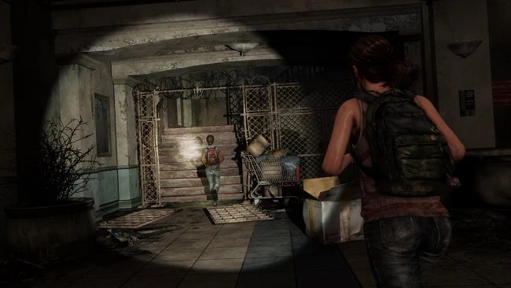

содержание
Приключения в торговом центре
Приключения в торговом центре
Глава
Глава

Сезон: Лето
Подглавы:
Покидая улицы,
Либерти Гарденс,
Дом веселья,
Секрет Бостона
Локация:
Бостон, Массачусетс
Персонажи:
Элли,
Райли
Мультиплеер
Артефакты:
2
Учебники:
0
Комиксы:
0
Медальоны «Цикад»:
0
Хронология
Предыдущая глава:
Скоро вернусь
Следующая глава:
Так близко
«Приключения в торговом центре» - вторая глава официального дополнения к «Одни из
нас», в которой раскрывается история дружбы Элли и Райли.
Элли и Райли едва успевают впрыгнуть в здание прежде чем их замечает патруль солдат. Девочки проделывают путь через почти развалившееся здание, и по пути Райли рассказывает, как ей удалось выйти на «Цикад», выследив одного из бойцов, с которыми они столкнулись ранее (события в «Американских мечтах»). Райли следовала за ним, свернув в аллею, но попала в западню - несколько бойцов «Цикад» окружили её, наряду с Марлин. Оказывается, королева сопротивления всё это время ожидала возвращения Райли, спросив, почему так долго.
Элли и Райли выбираются на крышу здания и одновременно с этим срабатывает тревога. Райли незамедлительно требует от Элли спрятаться, но оказывается, что это просто оповещение о возвращении патруля из-за пределов стен карантинной зоны. Осознав нелепость ситуации, Райли делает комментарий о том, что в последнее время эмоции у неё ни к черту. Элли отшучивается, что ей также надо стать «Цикадой», но Райли дает ответ, что она пыталась спросить разрешения у Марлин, но та настрого отказала.
Они продолжают свой путь вниз по сломанному эскалатору и перед их глазами предстает лагерь Уинстона. Райли ведает Элли, что Уинстон умер от сердечного приступа; довольно редкое явление для постапокалипстического мира - умереть естественным путем. Девочки не стесняясь осматривают его вещи в палатке, и Элли удается найти старую фотографию Уинстона в период своей молодости и до вспышки инфекции, комментируя, что Уинстон оказывается был красавчиком. Попутно девочки обсудили судьбу лошади Уинстона - Принцессы. В это время Райли удается найти уцелевшую бутылку виски и она предлагает Элли сделать глоток. По желанию игрока, Элли может отказать или принять предложение, но независимо от её решения, Райли отпивает из бутылки, и не смотря на юный возраст, ей удается удержать алкоголь в себе, чего не удастся сделать Элли (в случае согласия выпить).
Они покидают территорию лагеря, и направляются к обваленному участку холла, где они пытаются пролезть через металлическую балку, но та всё-таки поддается весу обломков и заваливает проход, отрезая девочек от дальнейшего пути. Элли и Райли принимают решение срезать через магазин по Хеллоуину. Элли подставляет руку, чтобы подтолкнуть Райли вверх к оконцу дабы та отперла дверь изнутри. Прошло некоторое время, а от Райли нет вестей. Элли пытается докричаться, но безуспешно, и вот в один миг дверь магазина медленно открывается и Элли решается зайти.
В конечном итоге девочки покидают магазин через противоположную от входа сторону и оказываются на балконной зоне. Райли замечает две машины, стоящие на уровень ниже от них, и немного кирпичей как раз рядом с ними. Райли предлагает Элли посостязаться: кто первый выбьет все окна у своей машины (Элли - красная; Райли - синяя). Элли заявляет о своей победе, будучи «мастером кирпича». Победителю будет дозволено задать серьезный вопрос проигравшему.
Если победит Элли, сохранив свой титул, она может задать Райли три ответа, или же просто спустить всё это на тормоза. Девочка может спросить о связи её матери с Марлин, на что получит ответ от Райли о том, что королева «Цикад» очень часто упоминает об Анне, и том, что обе были очень близки, несмотря на частые ссоры, и что это всё очень напоминает Райли об их с Элли дружбе. Если Элли спросит, почему Райли вот так взяла и бросила её, то получит ответ о том, что Райли было необходимо личное пространство, но Элли всё пыталась стать ближе.
Удивительно, но электричество действительно "оживляет" комнату. Элли мало верится, что эффект возымел дальше комнаты управления. Райли говорит, что единственный способ узнать - пойти проверить. Героиню интересует, неужели военные ничего не заметят, но Райли объясняет, что освещение работает только внутри здания.
Подходя к двустворчатым дверям, ведущим к залу, Элли вновь уточняет, почему Райли ушла, на что вторая отвечает, что она вернулась и никуда не уйдет. Явно взбодрившееся, обе входят в заполненный светом зал.
Сюжет
Покидая улицы
Элли и Райли едва успевают впрыгнуть в здание прежде чем их замечает патруль солдат. Девочки проделывают путь через почти развалившееся здание, и по пути Райли рассказывает, как ей удалось выйти на «Цикад», выследив одного из бойцов, с которыми они столкнулись ранее (события в «Американских мечтах»). Райли следовала за ним, свернув в аллею, но попала в западню - несколько бойцов «Цикад» окружили её, наряду с Марлин. Оказывается, королева сопротивления всё это время ожидала возвращения Райли, спросив, почему так долго.
Элли и Райли выбираются на крышу здания и одновременно с этим срабатывает тревога. Райли незамедлительно требует от Элли спрятаться, но оказывается, что это просто оповещение о возвращении патруля из-за пределов стен карантинной зоны. Осознав нелепость ситуации, Райли делает комментарий о том, что в последнее время эмоции у неё ни к черту. Элли отшучивается, что ей также надо стать «Цикадой», но Райли дает ответ, что она пыталась спросить разрешения у Марлин, но та настрого отказала.
Либерти Гарденс
Героиням удается попасть в заброшенный торговый центр и Элли пытается выяснить причину их появления здесь, но Райли отмалчивается. Пока девочки неспеша прогуливаются по центру, им удается обсудить совместную мечту о поездке в Лос-Анджелес, о том как у Элли отобрали водяные ружья и том как она пыталась их вернуть, но была поймана.Они продолжают свой путь вниз по сломанному эскалатору и перед их глазами предстает лагерь Уинстона. Райли ведает Элли, что Уинстон умер от сердечного приступа; довольно редкое явление для постапокалипстического мира - умереть естественным путем. Девочки не стесняясь осматривают его вещи в палатке, и Элли удается найти старую фотографию Уинстона в период своей молодости и до вспышки инфекции, комментируя, что Уинстон оказывается был красавчиком. Попутно девочки обсудили судьбу лошади Уинстона - Принцессы. В это время Райли удается найти уцелевшую бутылку виски и она предлагает Элли сделать глоток. По желанию игрока, Элли может отказать или принять предложение, но независимо от её решения, Райли отпивает из бутылки, и не смотря на юный возраст, ей удается удержать алкоголь в себе, чего не удастся сделать Элли (в случае согласия выпить).
Они покидают территорию лагеря, и направляются к обваленному участку холла, где они пытаются пролезть через металлическую балку, но та всё-таки поддается весу обломков и заваливает проход, отрезая девочек от дальнейшего пути. Элли и Райли принимают решение срезать через магазин по Хеллоуину. Элли подставляет руку, чтобы подтолкнуть Райли вверх к оконцу дабы та отперла дверь изнутри. Прошло некоторое время, а от Райли нет вестей. Элли пытается докричаться, но безуспешно, и вот в один миг дверь магазина медленно открывается и Элли решается зайти.
Дом веселья
Элли входит в магазин, где на неё тут же налетает и пугает Райли, нацепившая на себя маску волка. «Цикада» искрится смехом, предлагая Элли самой померить маску, что та незамедлительно делает. Райли очень нравится получившийся внешний вид Элли и предлагает ей как следует рыкнуть. Новоиспеченная волчица лишь издает хилый, неуверенный рев. Райли остается без впечатления и требует от Элли зареветь. Взвинтившей себя Элли всё-таки удается выдать рев столь громкий, что Райли не перестает смеяться. Пара исследует магазин, примеряя то там, то сям разные тематические маски, весело проводя время. Элли удается найти шар-предсказатель с которым она начинает играть, задавая разнообразные вопросы, некоторые из которых не одобряет Райли.В конечном итоге девочки покидают магазин через противоположную от входа сторону и оказываются на балконной зоне. Райли замечает две машины, стоящие на уровень ниже от них, и немного кирпичей как раз рядом с ними. Райли предлагает Элли посостязаться: кто первый выбьет все окна у своей машины (Элли - красная; Райли - синяя). Элли заявляет о своей победе, будучи «мастером кирпича». Победителю будет дозволено задать серьезный вопрос проигравшему.
Если победит Элли, сохранив свой титул, она может задать Райли три ответа, или же просто спустить всё это на тормоза. Девочка может спросить о связи её матери с Марлин, на что получит ответ от Райли о том, что королева «Цикад» очень часто упоминает об Анне, и том, что обе были очень близки, несмотря на частые ссоры, и что это всё очень напоминает Райли об их с Элли дружбе. Если Элли спросит, почему Райли вот так взяла и бросила её, то получит ответ о том, что Райли было необходимо личное пространство, но Элли всё пыталась стать ближе.
Секрет Бостона
Элли и Райли начинают спуск с балкона через лестничный пролет. Райли рассказывает, что у военных достаточно энергии для всего города, но они намеренно перекрыли её, дабы она была только там, где они хотят. Дуэт входит в комнату управления. Райли пытается сбить замок с щитка, говоря, что стоит только нажать один переключатель, и торговый центр снова озарит свет. Несмотря на скептицизм Элли, подруга оставляет все почести дернуть рычаг за Элли.Удивительно, но электричество действительно "оживляет" комнату. Элли мало верится, что эффект возымел дальше комнаты управления. Райли говорит, что единственный способ узнать - пойти проверить. Героиню интересует, неужели военные ничего не заметят, но Райли объясняет, что освещение работает только внутри здания.
Подходя к двустворчатым дверям, ведущим к залу, Элли вновь уточняет, почему Райли ушла, на что вторая отвечает, что она вернулась и никуда не уйдет. Явно взбодрившееся, обе входят в заполненный светом зал.
Коллекционные материалы
- Артефакты - 2
- Плакат о розыске - перебравшись через деревянные планки, рядом с надписью "Fight with Fedra", в противоположной стороне комнаты будет стоять стол, на котором и будет находится данный артефакт.
- Записка с предупреждением - спустившись до цокольного этажа торгового центра (после битвы на кирпичах с разбиванием стекол в автомобилях), необходимо повернуть в первое же помещение по левую сторону от Элли, где на левом столе с коричневым чемоданом и будет лежать данный артефакт.
- Медальоны Цикад - 0
- Справочники - 0
- Комиксы - 0
Необязательные разговоры
- Пройдя боком по узкому краю и перепрыгнув через отверстие в стене в комнату с камином, необходимо следовать за Райли до надписи на стене, оставленной Цикадами.
- Добравшись до торгового центра и спустившись по эскалатору, необходимо повернуть направо и следовать по коридору до постера с рекламой, посвященной Гавайям.
- Вернувшись к эскалатору, необходимо найти постер с рекламой водяных пистолетов, который будет находиться около большой кадки для растений.
- Спустившись по очередному эскалатору, возле палатки Уинстона можно поговорить с Райли.
- В палатке, разговор можно активировать у столика с газетами.
- Напротив палатки, на скамье, будет лежать седло Принцессы, разговор можно активировать возле него.
- Надев маску волка в магазине «Spooky Town Shop», необходимо добраться до дальнего правого угла помещения и у банки с искусственными глазами активировать диалог.
- Проследовав за Райли до противоположного угла, активировать диалог можно после того, как она наденет маску Дракулы.
- Для данного разговора необходимо вернуться на центральный ярус и надеть зеленую маску ведьмы, а потом поговорить с Райли.
- На ближайшем к выходу ярусе, необходимо надеть маску птицы с надписью «Triple Phoenix».
Интересные факты
- Внутри магазина с масками на Хеллоуин можно обнаружить два костюма, один из них — костюм Нейтана Дрейка, отсылка к серии Uncharted, второй — Джека из серии Jack and Daxter. Что интересно, обе серии игр разработаны Naughty Dog.
- Также в магазине, играясь с шаром-предсказателем, некоторые вопросы Элли предвещают события в самой игре, например, удастся ли ей когда-нибудь поводить машину, что и происходит в главе "Городок Билла".